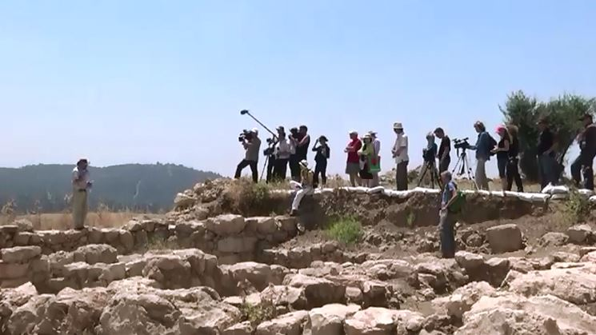
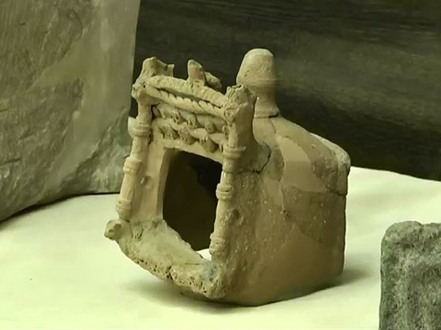

Traces of King David in the Valley of Elah
New archaeological finds were presented at a press conference at the Hebrew University of Jerusalem. They shed light on the historical setting of the biblical narrative. The finds were presented by Professor Yossi Garfinkel of the Institute of Archaeology at the Hebrew University and his colleague Saar Ganor of the Israel Antiquities Authority. Among them are miniature models of a temple that recall the description of Shlomo's Temple in the Book of Kings in the Tanakh.
After the press conference there was a tour of the excavation site at Khirbet Qeiyafa in the Valley of Elah. The excavations have uncovered most of a fortified city, its wall built of huge stones, and two city gates.

Prof. Yossi Garfinkel: "The most important thing here is the date of construction. We sent ten olive pits found on the site to Oxford. The answer we received: they date from between 1020 and 980 BCE."The fact that no archaeological evidence of Judean settlements of the 10th century BCE had been found until now was the basis of the minimalist theory. The minimalists assumed that David's kingdom was not a regional power but a small village in the area of Jerusalem.
Prof. Yossi Garfinkel: "These finds are very important, because for the first time in the archaeology of Israel a fortified city of Judah from the time of King David has been found!"

According to Scripture, the worship of the people of Israel differed from the religious worship of the other peoples of the ancient East in two respects: 1. Faith in the ONE God. 2. A form of worship that forbids sculpture or any other image. Three rooms used for worship were found in the city, which confirms the description in the Tanakh.Professor Yossi Garfinkel: "It was a great surprise: three rooms for worship. Not one, not two, but three. Do you understand? That means we can speak not of an isolated case but of typical behaviour, repeated again and again. Very interesting ritual objects were found in these rooms. And in none of them did we find any idol of a man or an animal. So this is a ritual that does not allow images. It is simply astonishing!"
Khirbet Qeiyafa is a fortified stronghold with enormous walls and considerable stores of weapons. And it was destroyed suddenly. All this is precisely in the period of David's reign, and precisely in the Valley of Elah. And "quite by chance" the Tanakh describes battles and wars in Judah at this very time. Suddenly everything falls into place. We have filled with life a historical period about which nothing was known. And now we know a great deal about it! In essence we are filling in the missing information from the 10th century BCE. In this way we must move on towards the 9th, 8th and 7th centuries BCE. Step by step we will restore the evidence of the continuous existence of the kingdom of Judah.
Translated from Hebrew by Ephraim Kalish / Torah-Art
See also this fascinating lecture given in the exhibition hall of the Israel Museum: